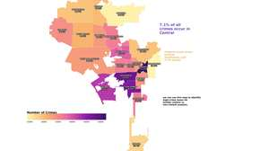

Machine Learning
LA Crime Type Prediction
Built an ML pipeline on 733,886 LAPD crime records (2020–2024) to classify violent vs. non-violent crime. Ran EDA, feature engineering, and statistical testing (Shapiro-Wilk, Chi-Squared, Cramér's V), then trained and compared five classification models, and Gradient Boosting performed best (71.5% accuracy, 0.785 AUC). Built ROC curves, confusion matrices, and choropleth maps for interpretation.
View on GitHub →